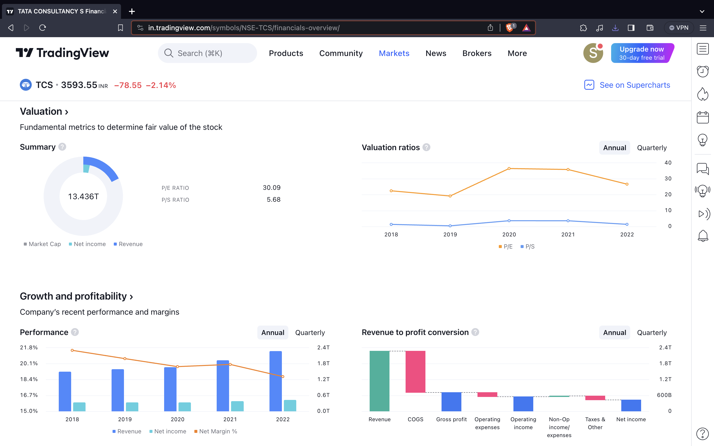

Fundamental Analysis
Delve into the fundamentals of companies and industries to make insightful trading decisions. Fundamental analysis involves assessing the intrinsic value of assets based on economic, financial, and qualitative factors.
Key Concepts in Fundamental Analysis
Understanding these fundamental concepts is crucial for effective fundamental analysis:
- Financial Statements: Analyzing balance sheets, income statements, and cash flow statements to evaluate a company's financial health.
- Economic Indicators: Monitoring economic indicators like GDP, unemployment rates, and inflation to gauge the overall economic environment.
- Valuation Ratios: Using ratios such as Price-to-Earnings (P/E), Price-to-Book (P/B), and Dividend Yield to assess the value of a company's stock.
- Industry Analysis: Evaluating the competitive landscape and growth prospects of the industry in which a company operates.
- Management and Governance: Assessing the quality of leadership and corporate governance practices within a company.
Articles and Charts
Further your understanding of fundamental analysis with these articles and visual aids:
- Investopedia - Introduction to Fundamental Analysis
- Investopedia - Fundamental Analysis: A Brief Overview

Example Fundamental Analysis Chart